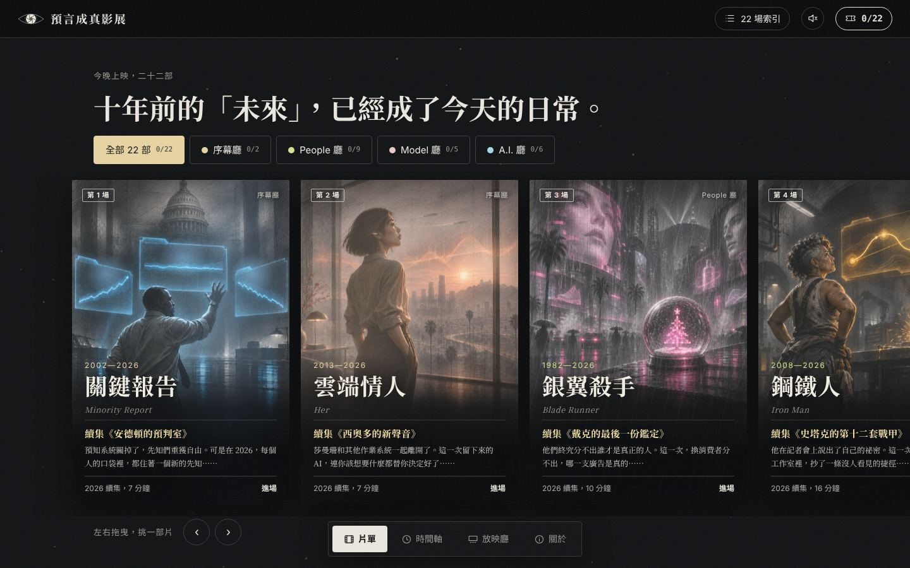
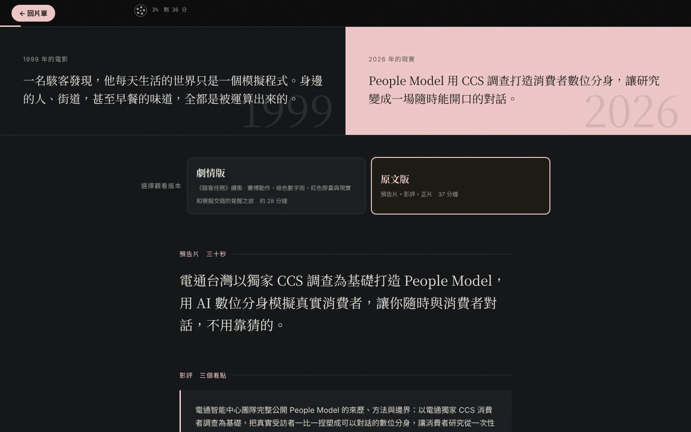

二十二部 今晚上映
預言成真影展
十年前的「未來」，已經成了今天的日常。
當年的科幻，今年的日常
沒有人會把一本刊物，
從第一頁讀到最後一頁。
但每個人，
都記得自己看過的電影。
我們不翻頁。我們選片、入座，等燈暗下來。
九十年來，有人把未來
拍成了二十二部電影。
今年，它們都成真了。
這裡放映的，是續集。
燈還亮著，
片單緩緩流過。
不放原版劇照。
每一部，都有一張專為 2026 續集繪製的海報。
今晚，我們挑《駭客任務》。

示範放映 一 燈暗
燈暗下來，
先畫一張素描。
素描顯影成海報，
片名像數字雨一樣落下。
配樂從黑暗裡響起——
只為這部片寫的，別處聽不到。
示範放映 二 續集
莫斐斯回來了，
帶著紅色膠囊。
這一次，他要帶你見的，
是一群用真實調查養成的模擬消費者。
整座影廳換成綠色的光。中場，一張插圖慢慢畫出來，然後動了起來。
故事是電影的；論點與數字，一個都沒改——0.89。

示範放映 三 回到原文
1999 的預言，
2026 的現實。
故事看完，輕輕一按，回到原文。
三十秒的預告、三分鐘的影評，
和一字未改的正片。


示範放映 四 散場
散場時，
帶走一張票根。
票根上印著今晚帶走的一句話。
下一場已經在等你。
集滿二十二張，閉幕片才會開演。

換一部片，
影廳就換了光。
暖桃色的信紙、默片的字卡、
霓虹雨夜、一整片星空。
二十二部片，二十二種光線，
二十二段只屬於它的聲音。
從 1936 到 2026，
每一則預言，都在今年準時上映。

燈亮了
當年的科幻，今年的日常。
22 部電影的續集，改編自《2026 決策智慧》22 篇文章
vincenthsu1972.github.io/prophecy-film-festival
進場觀賞感謝觀賞